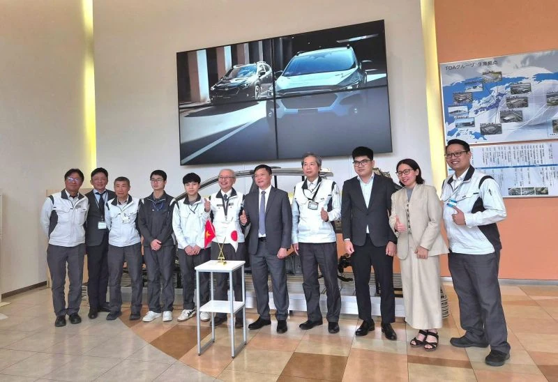
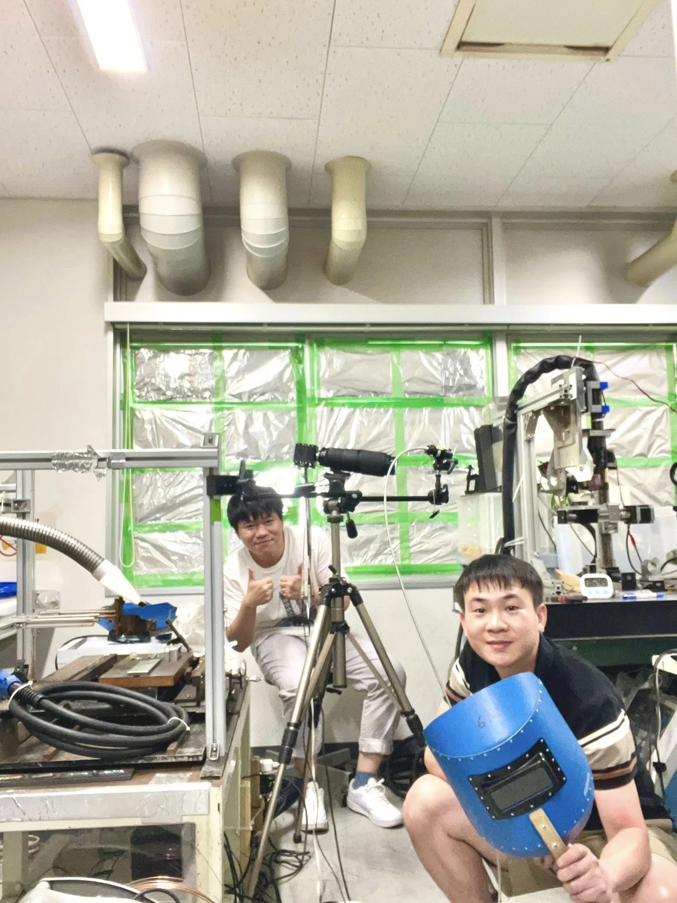
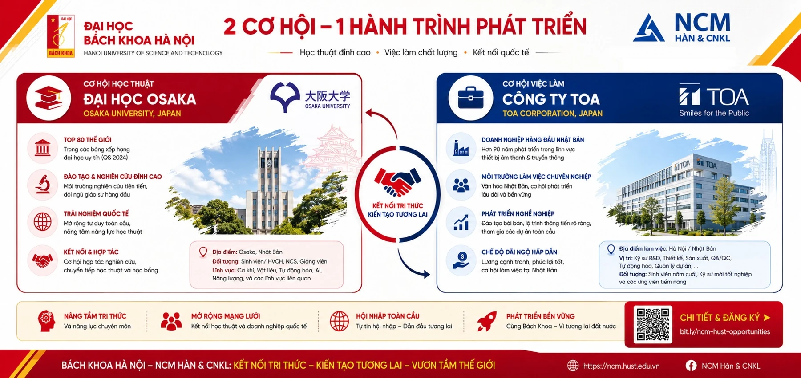

Bài viết gốc bằng tiếng Việt

Nhật Bản luôn được biết đến là cường quốc hàng đầu thế giới về công nghệ cơ khí và vật liệu. Bạn có muốn trực tiếp trải nghiệm môi trường học thuật đỉnh cao hay nắm chắc trong tay cơ hội làm việc tại xứ sở hoa anh đào ngay từ khi còn ngồi trên ghế nhà trường?
Tại Nhóm chuyên môn (NCM) Hàn & Công nghệ Kim loại – Đại học Bách khoa Hà Nội, cánh cửa vươn ra quốc tế luôn rộng mở nhờ các chương trình hợp tác chiến lược và toàn diện với các đối tác hàng đầu Nhật Bản.
Trải nghiệm nghiên cứu đỉnh cao tại Đại học Osaka (Chương trình Dojo)
Thông qua cầu nối vững chắc là Trung tâm Nghiên cứu Công nghệ Hàn và Ghép nối (JWRI HUST-UOsaka), NCM duy trì mối quan hệ hợp tác học thuật sâu rộng với Viện Nghiên cứu JWRI, Đại học Osaka – nơi quy tụ những chuyên gia hàng đầu thế giới trong lĩnh vực hàn và ghép nối, tiêu biểu như Giáo sư Manabu Tanaka; Giáo sư Hiroshi Nishikawa;
Đặc quyền dành riêng cho học viên Thạc sĩ của NCM là cơ hội tham gia chương trình trao đổi "Dojo":
- Chỉ tiêu: 02 sinh viên/năm.
- Thời gian: 6 tháng làm việc trực tiếp tại Đại học Osaka, Nhật Bản.
- Hoạt động: Sinh viên được thực tiếp tham gia các dự án nghiên cứu, tiến hành thí nghiệm trên các hệ thống máy móc, thiết bị hiện đại bậc nhất thế giới tại các phòng Lab của viện JWRI. Đây là bệ phóng hoàn hảo cho những ai đam mê nghiên cứu chuyên sâu và mong muốn có các công bố quốc tế chất lượng.

Hình ảnh học viên cao học của NCM đang thao tác trên máy móc thí nghiệm hiện đại tại phòng Lab GS Tanaka của ĐH Osaka
2. Thực tập hưởng lương và lộ trình sự nghiệp vững chắc cùng Công ty TOA
Không chỉ chú trọng học thuật, NCM còn liên kết chặt chẽ với các doanh nghiệp công nghiệp nặng tại Nhật Bản để đảm bảo đầu ra chất lượng cao cho sinh viên. Sự hợp tác với Công ty TOA mang đến một "đường ống" phát triển sự nghiệp không thể hấp dẫn hơn:
- Trang bị ngôn ngữ: Tổ chức đào tạo tiếng Nhật hoàn toàn miễn phí hàng năm cho các sinh viên chuyên ngành Công nghệ Hàn.
- Thực tập thực chiến: Sinh viên được gửi sang Nhật Bản thực tập trong vòng 03 tháng. Toàn bộ chi phí chuyến đi đều được công ty TOA đài thọ 100%.
- Bảo chứng việc làm: Những sinh viên có màn thể hiện xuất sắc trong đợt thực tập sẽ có cơ hội được TOA giữ lại làm việc chính thức tại Nhật Bản ngay sau khi tốt nghiệp.
Hai sinh viên Hoàng Danh Tồn và Đào Duy Đức chụp ảnh chung cùng lãnh đạo của Đại học và Công ty TOA ở Nhật Bản
Tương lai của bạn bắt đầu từ đây!
Việc kết hợp giữa nền tảng lý thuyết vững chắc tại Bách Khoa và kinh nghiệm thực chiến từ các đối tác Nhật Bản chính là chìa khóa để sinh viên NCM Hàn & Công nghệ Kim loại trở thành những Kỹ sư, Chuyên gia toàn cầu.
Đừng bỏ lỡ cơ hội ghi tên mình vào danh sách những sinh viên xuất sắc tiếp theo đặt chân đến Nhật Bản!

Liên hệ ngay để được tư vấn về lộ trình học tập:
NCM HÀN & CÔNG NGHỆ KIM LOẠI
Địa chỉ: Phòng 511M – C7, Đại học Bách khoa Hà Nội
Điện thoại: 0913 507 234 (PGS.TS. Bùi Văn Hạnh)